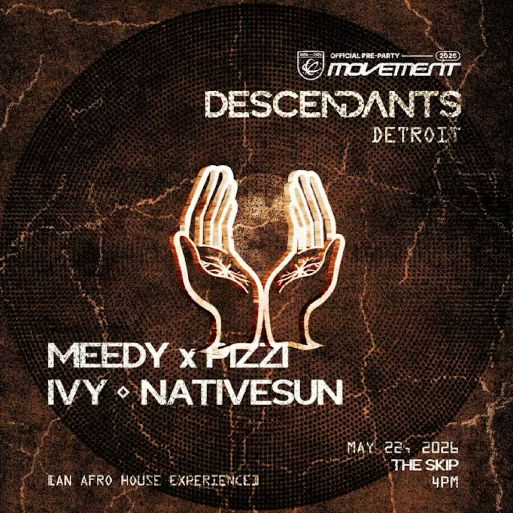

DESCENDANTS: An Afrohouse Experience
The Skip - 1234 The Belt, Detroit, MI 48226
Playing: Meedy, Pizzi, Ivy, Nativesun
Why this made the list: free, early, Afro house and Afro tech, and an easy social warm-up in The Belt.
- When
- Friday, May 22, 4:00 PM to 9:00 PM
- Signal
- Interest not listed
Crowd read: casual drop-ins, locals, friend groups, good for sampling the weekend.